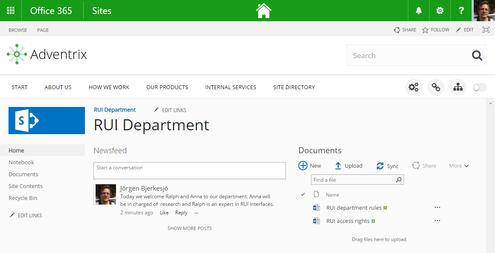

A team site is a site collection with it's own access rights. There is always at least one owner (also called local administrator) to the site, that can decide who will have access to the team site. The owner can also set a number of settings and can add resources (libraries etc) to the team site.

To make creation of team sites, and especially of specialized team sites, such as project sites or document publication sites, easier, Omnia contains functionality for creating and editing site templates and functionality for self service creation of sites. Specialized libraries can also contain certain Omnia functionality. The team site functionality in itself is Sharepoint standard.
The self service creation of team sites can either be set to actual self creation by any member of an Omnia installation, or can be set up so that the user orders a team site and then the creation of the site has to be approved by a dedicated administrator.
To make it easier for owners and members of a team site to add and remove users, and to edit the properties, Omnia contains a Site Quick Edit control.
To make it easier for users to find and access team sites the Omnia My sites list contains a list of all team sites the user is member of, and the user can also search for sites and choose which team sites to have quick access to, by following sites.
Omnia also contains functionality for notification of important events in team sites, through the Notification Panel.
See the following pages for more information:
In the documentation for Omnia Foundation you can read more about (also available in the left navigation):